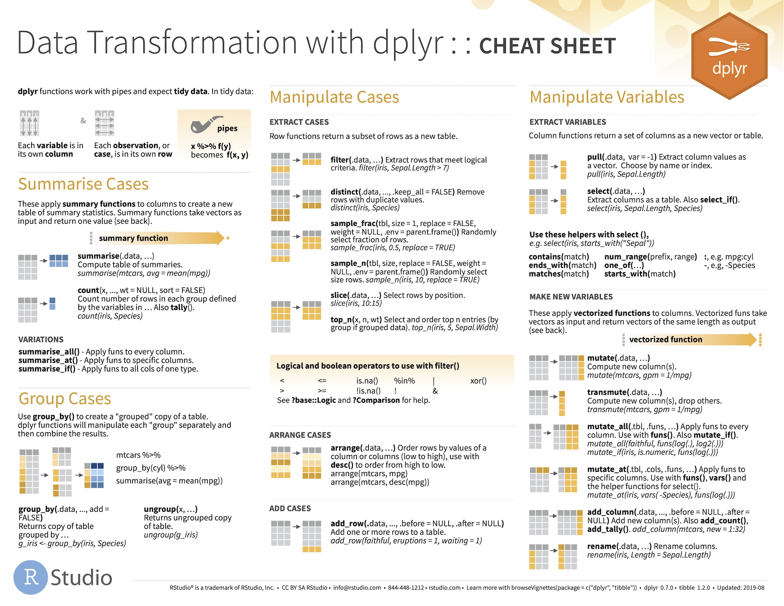

Chapter 6 Getting ready to use dplyr
6.1 Introduction
Data wrangling is the process of cleaning and manipulating data to get it ready for analysis, for example, by creating derived variables and subsets of the data. Although not the most exciting part of a study—we want to answer questions, not format data—data wrangling is critical. This step in a data analysis workflow can become very time-consuming if not tackled with the right tools.
The next few chapters will introduce the dplyr package. dplyr is an important member of the tidyverse ecosystem. Its job is to provide a set of tools to address common data manipulation tasks, such as selecting subsets of data, making new variables, and summarising data in various ways.
However, before we can start to use these tools, we need a bit of a foundation. That is the aim of this chapter. We will provide some background to the so-called tidy data principles, introduce the data set we’ll be using in our examples, discuss the tidyverse version of data frames known as the tibble, and finally, introduce the dplyr package.
6.2 Tidy data
dplyr will work with any data frame. However, it is most powerful when data are organised according to tidy data conventions for rectangular data sets. Tidy data has a specific structure that makes it easy to manipulate, model and visualise. A tidy data set is one where each variable is only found in one column and each row contains one unique observation (an imaged cell, a treated organism, an experimental plot, and so on).
The basic principles of tidy data are not too difficult to understand. We’ll use an example to illustrate what the “one variable = one column” and “one observation = one row” idea means. Let’s return to the made-up experiment investigating the response of communities to fertilizer addition. This time, imagine we had only measured biomass, but that we had measured it at two time points throughout the experiment.
We’ll look at two ways to organise some artificial data from this experimental setup. The first uses a separate column for each biomass measurement:
## Treatment BiomassT1 BiomassT2
## 1 Control 284 324
## 2 Control 328 400
## 3 Control 291 355
## 4 Fertilser 956 1197
## 5 Fertilser 954 1012
## 6 Fertilser 685 859This feels like a reasonable way to store such data, especially for an Excel user. However, this format is not tidy. Why? The biomass variable has been split across two columns (BiomassT1 and BiomassT2), which means each row corresponds to two distinct observations. We won’t go into the ‘whys’ here but take our word for it—adopting this format makes it difficult to use dplyr efficiently.
A tidy version of that example data set would still have three columns but now these would be: Treatment, denoting the experimental treatment applied; Time, denoting the sampling occasion; and Biomass, denoting the biomass measured:
## Treatment Time Biomass
## 1 Control T1 284
## 2 Control T1 328
## 3 Control T1 291
## 4 Fertilser T1 956
## 5 Fertilser T1 954
## 6 Fertilser T1 685
## 7 Control T2 324
## 8 Control T2 400
## 9 Control T2 355
## 10 Fertilser T2 1197
## 11 Fertilser T2 1012
## 12 Fertilser T2 859The change we made was to create an indicator variable called Time for the sampling occasion. In version one of the data, the time information was implicit—the time associated with a biomass measurement was encoded by column membership (BiomassT1 vs BiomassT2). In the second version of the data set an indicator variable, Time, was created to label the sampling occasion explicitly. That simple change means each row corresponds to one distinct observation and each variable lives in one column. These data are now tidy and ideally set up for use with dplyr.
Always try to start with tidy data
The best way to make sure your data set is tidy is to store in that format when it’s first collected and recorded. Some packages can help convert non-tidy data into the tidy data format (e.g. the tidyr package), but life is much simpler if we ensure our data are tidy from the very beginning.
6.3 Penguins! 🐧+📊= 😃
To make progress with dplyr, we are going to need some data to play around with. The data we’ll use contains measurements taken from penguins on the Palmer Archipelago, off the north-western coast of the Antarctic Peninsula. Each row contains information about an individual penguin, including:
- the species it belongs to,
- the island it was found on,
- morphometric data (flipper length, body mass, bill dimensions)
- its body mass and sex,
- and finally, the year of capture.

Figure 6.1: Meet the Palmer penguins (artwork by Allison Horst)
Why use this data set? Apart from the fact that everyone likes penguins, obviously, these data are sufficiently complex to demonstrate everything we want to do, while remaining easily understandable. Here is the full data set shown as a table:
N.B. — the data will only show up in the HTML version of the book.
This shows the first ten rows along with the first few columns. The Previous / Next links at the bottom right can be used to navigate the rows; the arrows in the top header row are used to view the different columns. Below each column name you can also see three-letter abbreviations like <dbl>, <int> and <chr>. These are telling us that each column is a vector of some kind:
<dbl>= a numeric ‘double’ vector (real numbers, i.e. with decimals)<int>= a numeric integer vector (integer numbers)<chr>= character vector.
So… data frames are table-like objects with rows and columns. They can also be seen in even simpler terms—data frames are simply collections of vectors, where each one represents a different aspect of a multi-faceted data set.
We’re going to be seeing a lot of this data set in the remaining chapters so we won’t say anything more about it now.
Where can we get the penguins data?
The Palmer penguins data were collected and made available by Dr. Kristen Gorman and the Palmer Station. The data set exists mostly to support people learning and teaching R. It isn’t part of base R, though. We have to import it into R somehow. There are two options:
The data are available in an R package called… palmerpenguins. Like other packages, palmerpenguins can be installed from CRAN using either
install.packagesor the usual RStudio point-and-click mechanism. Once installed, we can make it available by runninglibrary(palmerpenguins)in any R session. After that, just type the name of the data set and R will find it and use it. The version in palmerpenguins is calledpenguins, by the way.We could get a copy of the data set and store it as a file on our hard drive, ideally using a standard data format. The most common and portable format for storing rectangular data is as a ‘Comma Separated Value’ (CSV) text file. Once you have a copy of the data as a CSV file, it’s just a matter of using a function like read_csv from the readr package to import the data into R. This is explained in the Managing projects, scripts and data files appendix.
6.4 Um… tibbles?
To increase the scope of what the tidyverse can do, its makers created a special kind of data object known as a ‘tibble.’ This is meant to sound like the word ‘table’ pronounced by a New Zealander. We’re not lying—the person who started the tidyverse is from New Zealand. Its name is a clue that a tibble is a table-like object, i.e. a rectangular data structure similar to a data frame.
In fact, the easiest way to conceptualise a tibble is as a special data frame with a few extra whistles and bells. More often than not, it’s not necessary to pay attention to whether we’re working with an ordinary data frame or a tidyverse tibble—we can often treat them as though they are interchangeable.
That said, there are exceptions to this rule of thumb, and we do occasionally need to work out which one we’re using. A simple way to do this is by printing the data object. Imagine that we’ve imported the Palmer penguins into R and stored it in a tibble called penguins. This is what that would look like if we printed it at the Console:
penguins## # A tibble: 344 x 8
## species island bill_length_mm bill_depth_mm flipper_length_… body_mass_g
## <chr> <chr> <dbl> <dbl> <int> <int>
## 1 Adelie Torge… 39.1 18.7 181 3750
## 2 Adelie Torge… 39.5 17.4 186 3800
## 3 Adelie Torge… 40.3 18 195 3250
## 4 Adelie Torge… NA NA NA NA
## 5 Adelie Torge… 36.7 19.3 193 3450
## 6 Adelie Torge… 39.3 20.6 190 3650
## 7 Adelie Torge… 38.9 17.8 181 3625
## 8 Adelie Torge… 39.2 19.6 195 4675
## 9 Adelie Torge… 34.1 18.1 193 3475
## 10 Adelie Torge… 42 20.2 190 4250
## # … with 334 more rows, and 2 more variables: sex <chr>, year <int>The formatting applied to the output is telling us penguins is a tibble rather than an ordinary data frame (we only called it a data frame earlier because we had not introduced the concept of a tibble yet). There are a couple of clues about this in that printout. The very obvious one is the first line: # A tibble: 344 x 8. The printed output states penguins is a tibble! The output is also truncated—only the first ten lines were printed, and any columns that won’t fit on one row are summarised at the bottom (i.e. sex and year).
6.5 Missing values
Take a close look at the values of the body mass data (body_mass_g) in penguins (we’re using $ to extract the whole column):
penguins$body_mass_g## [1] 3750 3800 3250 NA 3450 3650 3625 4675 3475 4250 3300 3700 3200 3800 4400
## [16] 3700 3450 4500 3325 4200 3400 3600 3800 3950 3800 3800 3550 3200 3150 3950
## [31] 3250 3900 3300 3900 3325 4150 3950 3550 3300 4650 3150 3900 3100 4400 3000
## [46] 4600 3425 2975 3450 4150 3500 4300 3450 4050 2900 3700 3550 3800 2850 3750
## [61] 3150 4400 3600 4050 2850 3950 3350 4100 3050 4450 3600 3900 3550 4150 3700
## [76] 4250 3700 3900 3550 4000 3200 4700 3800 4200 3350 3550 3800 3500 3950 3600
## [91] 3550 4300 3400 4450 3300 4300 3700 4350 2900 4100 3725 4725 3075 4250 2925
## [106] 3550 3750 3900 3175 4775 3825 4600 3200 4275 3900 4075 2900 3775 3350 3325
## [121] 3150 3500 3450 3875 3050 4000 3275 4300 3050 4000 3325 3500 3500 4475 3425
## [136] 3900 3175 3975 3400 4250 3400 3475 3050 3725 3000 3650 4250 3475 3450 3750
## [151] 3700 4000 4500 5700 4450 5700 5400 4550 4800 5200 4400 5150 4650 5550 4650
## [166] 5850 4200 5850 4150 6300 4800 5350 5700 5000 4400 5050 5000 5100 4100 5650
## [181] 4600 5550 5250 4700 5050 6050 5150 5400 4950 5250 4350 5350 3950 5700 4300
## [196] 4750 5550 4900 4200 5400 5100 5300 4850 5300 4400 5000 4900 5050 4300 5000
## [211] 4450 5550 4200 5300 4400 5650 4700 5700 4650 5800 4700 5550 4750 5000 5100
## [226] 5200 4700 5800 4600 6000 4750 5950 4625 5450 4725 5350 4750 5600 4600 5300
## [241] 4875 5550 4950 5400 4750 5650 4850 5200 4925 4875 4625 5250 4850 5600 4975
## [256] 5500 4725 5500 4700 5500 4575 5500 5000 5950 4650 5500 4375 5850 4875 6000
## [271] 4925 NA 4850 5750 5200 5400 3500 3900 3650 3525 3725 3950 3250 3750 4150
## [286] 3700 3800 3775 3700 4050 3575 4050 3300 3700 3450 4400 3600 3400 2900 3800
## [301] 3300 4150 3400 3800 3700 4550 3200 4300 3350 4100 3600 3900 3850 4800 2700
## [316] 4500 3950 3650 3550 3500 3675 4450 3400 4300 3250 3675 3325 3950 3600 4050
## [331] 3350 3450 3250 4050 3800 3525 3950 3650 3650 4000 3400 3775 4100 3775The body mass information lives in a numeric (integer) vector, but not every element in that vector is a number. Two values are NA. That stands for ‘Not Available’—the NA’s job is to label cases where a value is missing or unknown. If you scroll around the table view of penguins above you’ll find NA’s in several of the columns.
Missing data crop up all the time. They are just one of those facts of life—maybe the recording machine broke one afternoon, perhaps one of our organisms was infected by a pathogen, or maybe a cow ate one of our experimental plots. One of the nice things about R is that it knows how to represent missing data. It does this using the NA symbol.
You need to be aware of missing values when they are present. Why? Because the behaviour of many functions is affected by the presence of NAs. Things get confusing if we don’t understand that behaviour. We will see some examples of this in the next few chapters.
6.6 Introducing dplyr
The dplyr package has been carefully designed to make it easy to manipulate ‘rectangular data,’ such as data frames. dplyr is very consistent in the way its functions work. For example, the first argument of the main dplyr functions is always an object containing our data. This consistency makes it very easy to get to grips with each of the main dplyr functions—it’s often possible to understand how one works by seeing one or two examples of its use.
Another reason for using dplyr is that it is orientated around a few core functions, each designed to do one thing well. These dplyr functions are sometimes referred to as its ‘verbs’ to reflect the fact that they ‘do something’ to data. For example:
selectis obtains a subset of variables,mutateis constructs new variables,filteris obtains a subset of rows,arrangeis reorders rows, andsummariseis calculates information about groups.
Notice that the names are chosen to reflect what each verb/function does to the input data. We’ll cover each of these verbs in detail in later chapters, as well as a few additional ones, such as rename and group_by.
Apart from being easy to use, dplyr is also fast. This doesn’t matter for small data sets but can be important when working with data sets with hundreds of thousands of rows. The dplyr package also allows us to work with data stored in different ways, for example, by interacting directly with several database systems. We’re going to focus on using it with data frames and tibbles. But remember—once you know how to use dplyr with data frames its easy to use it for work with other kinds of data sources.
A dplyr cheat sheet
The developers of RStudio have produced a very usable cheat sheat that summarises the main data wrangling tools provided by dplyr.

Our advice is to download this, print out a copy, and refer to it often as you start working with dplyr.
6.6.1 A first look at dplyr
We’ll draw this chapter to a close by taking a preliminary look at the dplyr package. The package is not part of the base R installation, so we have to have installed it first. Remember, once installed, there is no need to install the package every time we need to use it. We do have to use library to load and attach the package every time we want to use it:
library("dplyr")Let’s look at one handy dplyr function now. Sometimes we just need a quick, compact summary of a data frame or tibble. This is the job of the glimpse function from dplyr:
glimpse(penguins)## Rows: 344
## Columns: 8
## $ species <chr> "Adelie", "Adelie", "Adelie", "Adelie", "Adelie", "…
## $ island <chr> "Torgersen", "Torgersen", "Torgersen", "Torgersen",…
## $ bill_length_mm <dbl> 39.1, 39.5, 40.3, NA, 36.7, 39.3, 38.9, 39.2, 34.1,…
## $ bill_depth_mm <dbl> 18.7, 17.4, 18.0, NA, 19.3, 20.6, 17.8, 19.6, 18.1,…
## $ flipper_length_mm <int> 181, 186, 195, NA, 193, 190, 181, 195, 193, 190, 18…
## $ body_mass_g <int> 3750, 3800, 3250, NA, 3450, 3650, 3625, 4675, 3475,…
## $ sex <chr> "male", "female", "female", NA, "female", "male", "…
## $ year <int> 2007, 2007, 2007, 2007, 2007, 2007, 2007, 2007, 200…The function takes one argument: the name of a data frame or tibble. It then tells us how many rows it has, how many columns there are, what these columns are called, and what type of data is associated with them. This function is useful when we need a quick overview of what’s inside our data set. Some advice—use this function on any new data set before trying to do anything with it.
6.6.2 dplyr pseudocode
We’ll wrap-up this chapter with a quick mention of ‘pseudocode.’ Pseudocode uses structural conventions of normal R code but is intended for us (humans) to read rather than the computer. We use it summarise how dplyr functions work. Here’s an example you will encounter in the next chapter:
select(<data>, <variable-1>, <variable-2>, ...)This is not an example we can run. It is pseudocode that serves as a template for using the dplyr select function. The words surrounded by ‘angle brackets’ (< >) are placeholders. If we want to turn this pseudocode into real R code we have to replace those placeholders. For example, <data> is a placeholder for the name of a data set. We would replace that with the word penguins if we want to use select on our example data set (we’d also have to do something with the other placeholders (e.g. <variable-1>)—we’ll get to that later).
That’s enough about pseudocode and dplyr templates. We’ll see plenty of these in the next few chapters.